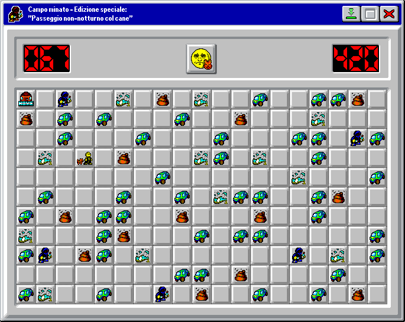

❤️ E per concludere... + 🗣️ Sezione commenti
Scritto e curato da e a 30·Ott·2026, mentre l'idea da 29·Ott·2026. La pixel-art è stata fatta in parte fatta da zero e il restante modificando quella già esistente da 29·Ott·2026 a mezza-notte precisa del 30·Ott·2026Telegram: Ita. · Eng.
Mastodon: Ita. · Eng.
Bluesky · Ludomedia · Reddit